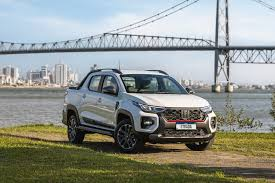
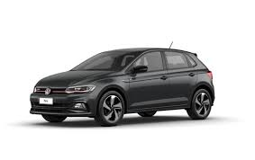
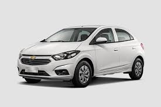
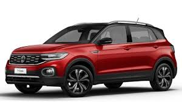
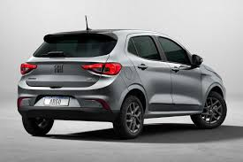
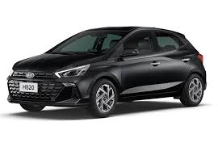

-

1. Fiat Strada
14.240 unidades vendidas.
A Fiat Strada é uma picape compacta popular no Brasil, reconhecida por sua versatilidade e confiabilidade tanto em ambientes urbanos quanto rurais. Com um design moderno e tecnologia avançada, ela oferece economia e conforto.
-

2. Volkswagen Polo
12.355 unidades vendidas.
O Volkswagen Polo é um compacto popular, reconhecido por sua eficiência e design moderno. Oferece bom desempenho, conforto e tecnologia avançada.
-

3. Chevrolet Onix
8.610 unidades vendidas.
O Chevrolet Onix é um compacto popular no Brasil, conhecido por seu bom custo-benefício, economia de combustível e tecnologia avançada.
-

4. Volkswagen T-Cross
8.543 unidades vendidas.
O Volkswagen T-Cross é um SUV compacto, famoso por sua versatilidade e design moderno. Ele oferece bom desempenho, conforto e tecnologia avançada, tornando-o uma escolha popular para famílias e motoristas urbanos.
-

5. Fiat Argo
8.421 unidades vendidas.
Oferece uma cabine espaçosa e confortável, ideal para o uso diário na cidade. É uma excelente escolha para quem busca praticidade e estilo em um carro compacto.
-

6. Hyundai HB20
7.500 unidades vendidas.
Ele oferece um motor flex 1.0, faróis com luz diurna (DRL), airbags, direção elétrica e freios ABS de série1. O HB2 0 é uma excelente opção para quem busca um carro completo e econômico.